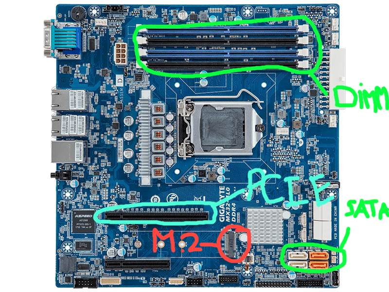

Ports op een Moederbord
Deze pagina gaat je alles vertellen over de ports van je moederbord
De ports op je moederbord
PCIe-Slots
PCIe-slots zijn de ports die je gebruikt om je videokaart, geluidskaarten, netwerktkaarten en dergelijke. Een PCIe-slot word het meest gebruikt voor videokaarten en zorgt ervoor dat je videokaart in sommige instanties extra stroom krijgt. Verder zorgt het ervoor dat het verbind met alle andere hardware van je moederbord. Ik gebruik zelf mijn PCIe-slots voor mijn videokaart en voor een netwerkkaart zodat ik goede wifi heb. Maar zoals ik al zei kun je ze ook gebruiken voor geluidskaarten bijvoorbeeld, omdat sommige headsets niet genoeg stroom krijgen uit een 3.5mm jack gebruiken kun j e een geluidskaart aansluiten die een specifieke port heeft voor jouw headset die zorgt voor genoeg stroom en dus zorgt dat jou geluid beter is.
SATA en M.2-sloten
SATA en M.2 ports worden gebruikt voor je opslagapparaten zoals: HDD en SSD's. De SATA port word gebruikt voor HDD's en oude SSD's deze pluggen niet direct in je moederbord, maar via een kabel en ontvangen nog losse stroom van de voeding. SATA ports zijn daarom ook de slechtere port die je kunt gebruiken voor opslagapparaten en worden vaak teruggehouden omdat ze niet direct in je moederbord pluggen. M.2 ports zijn daarom ook de superieure porten, omdat zoals ik al zei deze direct pluggen in je moederbord en geen externe stroom moet ontvangen van de voeding. Oude moederborden hebben deze ports meestal niet, omdat nog een redelijke recente uitvinding is. Meestal als je een nieuw moederbord hebt zullen deze 1 of 2 van deze ports gebruiken.
DIMM-slots
DIMM-slots zijn de ports op je moederbord die je gebruikt voor je RAM geheugen. Je hebt verschillende soorten DIMM slots, maar degene die jouw computer waarschijnlijk heeft zijn bedoeld voor DDR4 geheugen en is de beste optie voor de gemiddelde gebruiker. Maar nieuwe moederbords hebben nieuwe DIMM-slots waarop je DDr5 geheugen kan aansluiten wat heel recent is en in de laatse jaren is geintroduceerd. Per moederbord verschild het ook hoeveel MHz jouw ram geheugen kan bieden, want soms kan jouw RAM geheugen bijvoorbeeld 3200 mHz bieden maar kan jouw moederbord maar 2400 mHz handelen. Meestal als je nieuw geheugen aansluit op je moederbord die 3200 mHz kan produceren staat dit niet automatisch ingesteld in je bios en met je dit aanpassen zodat jouw PC zijn RAm geheugen zich tot de maximale potentie kan volbrengen en alle mHz gebruikt.
Verdere onbelangerijke slots
Verder zitten er op een moederbord nog USB slots die je kunt gebruiken zodat je fans zijn verbonden met je moederbord en deze allemaal met hetzelfde besturingssysteem kan behandelen. Rechtsonder op een moederbord zitten allemaal pins die bedoeld zijn voor de behuizen zodat als je op de aan knop van een behuizing klikt je computer ook daadwerkelijk aangaat. 